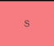
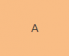
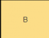
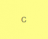
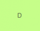

| Rank | Gen Ed Classes | Major Requirement Class (CCBC) | Major Requirement Class (Towson) | Class Time Slots I’ve Had | Declared Majors |
|---|---|---|---|---|---|
 |
English Composition I | Fundamentals of Logic and Design | Enterprise Systems and Architecture | 12:30-1:45 | Computer Information Systems |
 |
Health and Wellness | Technology and Information Systems | Computer Science I | 11:30-12:45 | General Studies |
 |
Foundation of Education | Introduction to Statistical Methods | Discrete Math | 5-6:15 | Computer Science |
 |
English Composition II | Introduction to Information Assurance | Fundamentals of Information Systems and Technology | 2-3:15 | Information Technology |
 |
Introduction to Physical Geography | Human Anatomy and Physiology | Data Organization | 9:30-10:45 AM | Radiography |
Overall, I found this to be a pretty neat lab. It gave me a great hands-on experience on how to create them using HTML and CSS. There was a point where I got stuck- which was trying to make the texts in each row not be so congested to each other. Since originally, the text in some td's were almost touching one another. This eventually got solved by adding padding, which also lead to the general table of having a cleaner appearance.